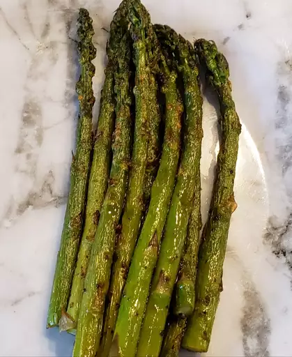

Air Fryer Asparagus

Description
This asparagus recipe is easy to make and takes approximately 20 minutes. The asparagus will be perfectly cooked and is a great addition to any meal.
Ingredients
- 1 bunch fersh asparagus, trimmed
- olive oil
- 1/2 teaspoon garlic powder
- 1/2 teaspoon onion powder
- 1/2 teaspoon salt and pepper
- 1/4 cup freshly grated parmesan cheese
Instructions
- Preheat air fryer to 375 degrees F (190 degrees C). Line the basket with parchment paper
- Add asparagus to the basket and drizzle in olive oil. Sprinkle with garlic and onion powder, salt, and pepper. Gently toss to coat asparagus in seasonings and oil, then top with parmesan cheese.
- Air fry until asparagus starts to char, about 7 to 9 minutes.